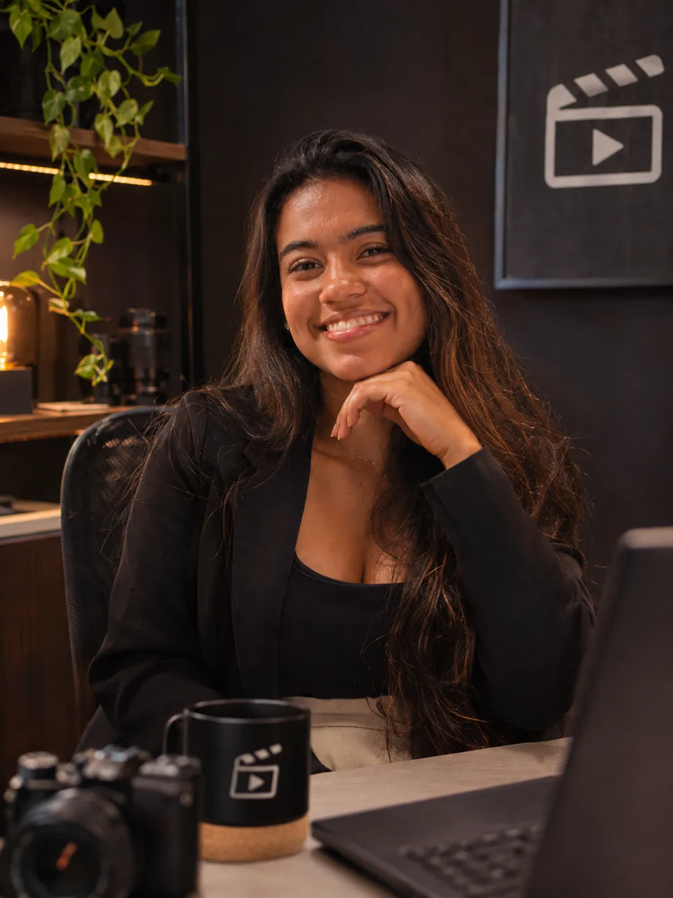

Presença constante
Stories frequentes mantêm seu negócio no topo da tela de quem já te segue e de quem está chegando.
Atendendo toda a Região dos Lagos
Eu vou até o seu negócio, capto bastidores, produtos e momentos reais, e entrego conteúdo pronto pra postar no mesmo dia. Sem roteiro engessado, com a cara da sua marca.
Orçamento sem compromisso Direto no WhatsApp

Por que ter uma storymaker
Stories frequentes mantêm seu negócio no topo da tela de quem já te segue e de quem está chegando.
Enquanto você atende, cozinha ou recebe clientes, eu cuido de registrar e transformar isso em conteúdo.
Bastidores, rotina e gente de verdade geram mais confiança do que post de banco de imagem.
Serviços
Todos incluem captação no local, edição com legendas e trilha, e entrega pronta para postar.
Não sabe qual escolher? Qual é o seu momento?
Ideal para começar ou para uma ação pontual: lançamento, nova coleção, inauguração.
Para quem quer conteúdo para semanas, cobrindo produtos, equipe, ambiente e rotina.
Presença contínua: eu viro parte da rotina da sua marca, com visitas recorrentes.
Casamentos, aniversários, inaugurações, festas e eventos corporativos registrados em tempo real.
Valores sob consulta, conforme cidade, quantidade de diárias e tipo de conteúdo.
Para quem é
Como funciona
Você me conta sobre sua marca, seu público e o que quer mostrar.
Definimos o pacote, as datas e uma lista de cenas que não podem faltar.
Vou até você e gravo tudo direto no formato vertical, com naturalidade.
Material editado e organizado, pronto para postar quando quiser.


Prazer, Izadora
Sou storymaker na Região dos Lagos. Meu trabalho é estar ao seu lado, de celular na mão, captando o que faz a sua marca ser única: o sorriso da equipe, o prato saindo da cozinha, o pôr do sol da sua pousada, o brinde no seu evento.
Gosto de conteúdo leve, verdadeiro e bonito, que conversa com quem assiste e faz a pessoa querer estar ali.
Vamos conversarDúvidas frequentes
Não encontrou sua pergunta? Me chama no WhatsApp.
Produz conteúdo vertical para redes sociais (stories, reels e fotos) captado no seu negócio ou evento, já editado e pronto para publicar.
Toda a Região dos Lagos: Cabo Frio, Búzios, Arraial do Cabo, São Pedro da Aldeia, Iguaba Grande, Araruama, Saquarema e Rio das Ostras. Outras cidades sob consulta.
Os dois são possíveis. Nos pacotes eu entrego o material pronto; no contrato mensal e em eventos posso postar ao vivo, se você quiser.
Parte do conteúdo sai no mesmo dia da captação. O restante é entregue em poucos dias, conforme o pacote combinado.
Não. Dá para mostrar produtos, ambiente, equipe e clientes. Se você quiser aparecer, eu te guio na hora para ficar natural.
Vale. Conteúdo constante e bem feito é o que faz um perfil crescer e passar confiança para quem chega pela primeira vez.
Me chama pelo formulário abaixo ou pelo WhatsApp. A data fica reservada após a confirmação do orçamento.
Agenda aberta
Preencha em 30 segundos. Sua mensagem abre direto no meu WhatsApp.